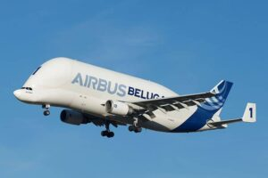
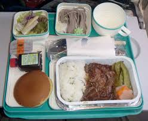

El fascinante mundo de los Aviones
Historia de la aviacion
Desde los primeros sueños de volar hasta la era moderna,la historia de la aviacion es fascinante
la aviacion ha revolucionado,el transporte,el comercio y la comunicacion,impactando profundamente en la sociedad
Los Hermanos Wright
En diciembre 1903, Orville y Wilbur Wright realizaron con exito al primer vuelo controlado con un avion motorizado en Kitty Hawk Carilina del Norte
La Primera Guerra Mundial
La aviacion militar comienza a jugar un papel crucial durante la primera guerra mundial, donde se desarrollaron aviones para reconocimiento y combate
Tipos de Aviones
Existen varios tipos de aviones, desde comerciales hasta militares
Aviones comerciales
Los aviones comerciales son utilizados para el transporte de pasajeros y carga
Avion de Carga
Estos aviones estan diseñados especificamente para trasportar mercancias
Aviones Privados
Los aviones privados son utilizados por individuos o empresas para viajes personales
Aviones Militares
Estos aviones son utilizados por las fuerzas armadas para diversas misiones
Drones
Los drones son aeronaves no tripuladas que se utilizan para diversas aplicaciones, desde la vigilancia hasta la entrega de paquetes

Tecnologia y Aerodinamica
La tecnologia detras de los aviones es increible y ha evolucionado a lo largo del tiempo
Principios Fundamentales
La tecnologia aeronautica se basa en principios de fisica para permitir el vuelo. Los cuatro fuerzas principales que actuan sobre un avion son:
- Sustentacion (Lift)Fuerza que contrarresta el peso y mantiene al avion en el aire. Se genera principalmente por el diseño del ala y el flujo de aire sobre ella
- Peso (Weight)La fuerza de gravedad que tira del avion hacia abajo
- Empuje (Thrust)La fuerza generada por los motores que impulsa al avion hacia adelante
- Resistencia (Drag)La fuerza que se opone al movimiento del avion a traves del aire
Para que un avion vuele, la sustentacion debe ser mayor o igual a la resistencia
Componentes clave de un Avion
Los aviones modernos son maquinas complejas con muchas partes, pero algunas de las mas importantes incluyen:
- Alas:Diseñadas para generar sustentacion. Su forma aerodinamica es crucial
- Fuselaje:El cuerpo principal del avion, donde se alojan la cabina,los pasajeros y la carga
- Motores:Proporcionan el empuje necesario para el vuelo. Puede ser de turbina,helice,etc.
- Cola(Empenaje)Incluye el estabilizador horizontal y vertical, que ayudan a controlar la direccion y estabilidad del avion.
- Tren de Aterrizaje:Permite el despegue, el aterrizaje y el movimiento en tierra.
Avionica y control
La avionica Se refiere a todos los sistemas electronicos a bordo de un avion incluyendo:
- Sistemas de Navegacion:GPS,sistemas inerciales,etc.para determinar la posicion y ruta del avion
- Sistemas de Comunicacion:Radio para hablar con el control de trafico aereo y otras aeronaves
- Sistemas de Control de vuelo:Incluyen superficies de control como alerones,timon de profundidad y timon de direccion, operados por sistemas hidraulicos o electricos
- Computadoras de vuelo:Ayudan en la gestion del vuelo, la optimizacion del combustible y la presentacion de informacion al piloto
Curiosidades y datos interesantes
¿sabias que el avion mas rapido del mundo puede alcanzar mas de 3000 km/h?
El avion mas rapido del mundo
¿Sabias que el avion supersonico concorde aunque ya retirado, ostenta el record de la velocidad para un avion comercial?¡Podia cruzar el Atlantico en menos de 3 horas y media! Su velocidad maxima era de Mach 2.04, es decir, mas del doble de la velocidad del sonido
Oxigeno para los Pasajeros
Las mascaras de oxigeno que encuentras en los asientos de los aviones solo proporcionan oxigeno durante unos 15 minutos. Esto en porque el tiempo estimado para que la tripulacion pueda descender a una altitud pueda desender a una altura segura y respirable esxde la aproximadamente 10 minutos.¡ es tiempo suficiente para aterrizar de emergencia!
¿Porque las ventanas son redondiadas?
Las esquinas redondeadas de las ventanas de los aviones no son solo por estetica. Se deben a razones de seguridad. Las esquinas cuadradas crearian puntos de concentracion de estres en la cabina presurizada, lo que podria llevar a grietas y fallos estructurales. Las formas redondeadas distribuyen la presion de manera mas uniforme

El peso de la comida
Una comida tipica para un pasajero en un vuelo largo puede pesar alrededor de 750 gramos. Esto imcluye el plato principal, acompañamientos,postres,pan,mantequilla,bebida y cubiertos. ¡imagina multiplicar eso por cientos de pasajeros!
El avion mas grande del mundo
El avion de carga Antonov An-225 Mriye(que lamentablemente fue destruido en 2022 durante la durante la invacion rusa de Ucranea) era el avion mas grande y pesado jamas costruido.tenia seis motores y una envergadura de casi 88 metros. Era capaz de transportar cargas masivas